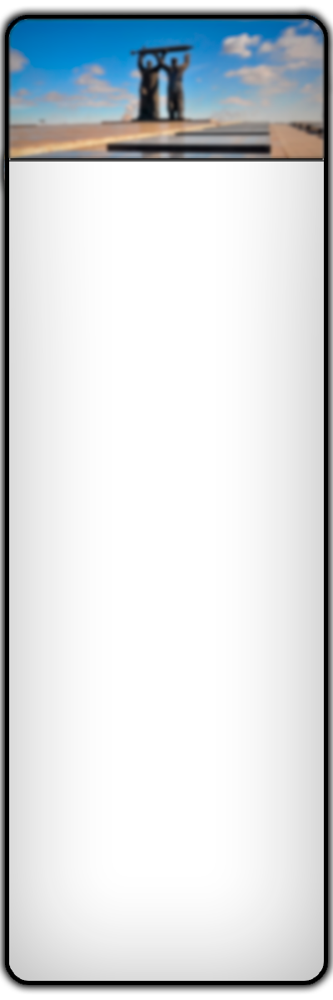

Достопримечательности Магнитогорска на карте города
Щёлкните мышью по знакуᅠ ᅠ на карте
* Для просмотра на Персональном Компьютере (ПК) Или телефоне с помощью функции "Версия для ПК"
Автор разработки: Степаненко Артём, МОУ "СОШ № 36", 7а класс, г. Магнитогорск